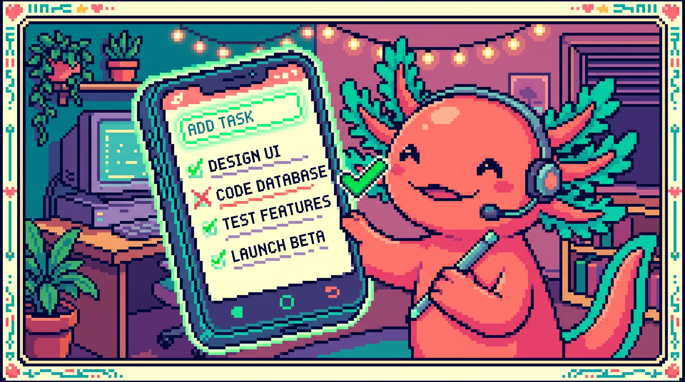

Capitulo 14 — Mini-proyecto: lista de tareas interactiva

¡Hola de nuevo! Soy Bit, tu ajolote programador. Hoy es un dia especial: vamos a juntar TODO lo que aprendiste en el modulo de JavaScript (el DOM, los eventos, los arrays y el almacenamiento) para construir algo de verdad, algo que funciona y que puedes ensenarle a tu familia. Vamos a hacer una lista de tareas interactiva: escribes una tarea, la anades, la marcas como hecha, la borras... y lo mejor: aunque cierres el navegador, ¡tus tareas siguen ahi! Respira hondo. Lo vas a lograr paso a paso. Yo te acompano. 🐾
1. ¿Que vamos a construir?
Imagina una libretita digital. Tiene una cajita donde escribes "Comprar pan", aprietas un boton y la tarea aparece en una lista. Si ya compraste el pan, le das clic y se tacha. Si te equivocaste, la borras. Y si cierras la pestana y vuelves manana, tus tareas siguen ahi esperandote.
Eso es exactamente lo que harás hoy. Vamos a usar tres lenguajes juntos:
- HTML para la estructura (la cajita, el boton, la lista vacia).
- CSS para que se vea bonito.
- JavaScript para que cobre vida: que reaccione a tus clics y recuerde tus datos.
🟦 ¿Que significa? — Mini-proyecto
Un mini-proyecto es un programa pequeno pero completo: tiene principio y fin, y hace algo util de verdad, no es solo un ejercicio suelto. Sirve para practicar uniendo varios temas a la vez, que es como funciona la programacion en la vida real. En tunal-digital (un sitio web hecho con HTML, CSS y JavaScript puro), todo el sitio es como un gran proyecto donde el archivo
main.jsune muchas piezas: el chat con IA, el formulario de contacto y las llamadas al servidor. Tu lista de tareas es tu primer "main.js" en miniatura.💡 Tip
No intentes escribir todo el codigo de golpe. La forma profesional de trabajar es un pasito, probar, otro pasito, probar. Asi, si algo se rompe, sabes exactamente que linea fue. Bit lo hace asi todos los dias.
2. Preparamos el escenario: el HTML
Abre tu editor de codigo y crea una carpeta nueva llamada lista-tareas. Dentro, crea un archivo llamado index.html. Este archivo es el esqueleto de nuestra pagina.
🟦 ¿Que significa? — HTML
HTML (HyperText Markup Language) es el lenguaje que define la estructura de una pagina web: que hay un titulo aqui, una caja de texto alla, un boton mas abajo. No decide colores ni comportamiento, solo el "que cosas hay y en que orden". Sirve como el esqueleto de cualquier web. En tunal-digital, cada pagina empieza por un archivo HTML que dibuja los botones y formularios que luego el JavaScript hace funcionar.
Escribe esto dentro de index.html:
<!DOCTYPE html>
<html lang="es">
<head>
<meta charset="UTF-8" />
<title>Mi lista de tareas</title>
<link rel="stylesheet" href="estilos.css" />
</head>
<body>
<h1>📝 Mi lista de tareas</h1>
<div class="caja">
<input type="text" id="entrada" placeholder="Escribe una tarea..." />
<button id="boton-anadir">Anadir</button>
</div>
<ul id="lista"></ul>
<script src="app.js"></script>
</body>
</html>
Fijate en tres cosas importantes que vamos a usar despues desde JavaScript:
- El
<input>tieneid="entrada": ahi escribira el usuario. - El
<button>tieneid="boton-anadir": el boton que dispara la accion. - El
<ul>tieneid="lista": la lista (por ahora vacia) donde apareceran las tareas.
🟦 ¿Que significa? — id (identificador)
Un
ides un nombre unico que le pones a un elemento del HTML para poder encontrarlo despues desde JavaScript. Como ponerle nombre a una mascota: solo puede haber un "entrada" en toda la pagina. Sirve para que tu codigo diga "agarra ESE elemento exacto". En tunal-digital, elmain.jsusa ids para encontrar el formulario de contacto y la caja del chat antes de hacerlos funcionar.🟦 ¿Que significa? — input
Un
inputes una caja donde el usuario escribe o introduce datos. El tipotype="text"es para texto normal. Sirve para recoger lo que la persona quiere comunicarle al programa. En tunal-digital, el formulario de contacto usa variosinputpara que el visitante escriba su nombre y su correo.🔎 En tu codigo
El
<ul>esta vacio a proposito. Las tareas NO se escriben a mano en el HTML: las va a crear JavaScript automaticamente cada vez que el usuario anada una. Esa es la magia de una pagina "interactiva".
3. Un toque de estilo: el CSS
Crea ahora estilos.css en la misma carpeta. No te preocupes por entenderlo todo, el CSS solo decora.
🟦 ¿Que significa? — CSS
CSS (Cascading Style Sheets) es el lenguaje que decide como se ve la pagina: colores, tamanos, espacios, tipos de letra. Sirve para que algo que ya existe (gracias al HTML) se vea agradable. En tunal-digital, el CSS le da al sitio su aspecto de marca: los colores, los botones redondeados y los espacios.
body {
font-family: sans-serif;
max-width: 500px;
margin: 40px auto;
padding: 0 20px;
}
.caja { display: flex; gap: 8px; }
#entrada { flex: 1; padding: 10px; }
button { padding: 10px 16px; cursor: pointer; }
ul { list-style: none; padding: 0; }
li {
display: flex;
justify-content: space-between;
padding: 10px;
border-bottom: 1px solid #ddd;
}
li.hecha span { text-decoration: line-through; color: gray; }
La ultima regla es la mas interesante para nosotros: cuando un <li> tenga la clase hecha, su texto aparecera tachado y gris. Lo activaremos desde JavaScript.
🟦 ¿Que significa? — clase (class)
Una clase es una etiqueta reutilizable que le pones a uno o varios elementos para darles un estilo o marcarlos. A diferencia del
id(unico), muchos elementos pueden compartir la misma clase. Sirve para aplicar el mismo aspecto o comportamiento a un grupo. Aqui,hechamarcara todas las tareas completadas.
4. ¡Llega JavaScript! Conectamos con la pagina
Crea el archivo app.js. Aqui vive toda la inteligencia. Lo primero: que JavaScript encuentre los elementos del HTML.
🟦 ¿Que significa? — JavaScript
JavaScript es el lenguaje que le da comportamiento a la pagina: hace que reaccione a clics, que cambie sola, que recuerde cosas. Si el HTML es el esqueleto y el CSS la piel, JavaScript es el sistema nervioso. En tunal-digital, el archivo
main.jses JavaScript puro y se encarga de todo lo "vivo" del sitio.🟦 ¿Que significa? — DOM
El DOM (Document Object Model) es la forma en que JavaScript ve la pagina HTML: como una coleccion de objetos que puede leer y modificar. Gracias al DOM, tu codigo puede decir "agarra la caja de texto" o "crea un elemento nuevo en la lista". Sirve de puente entre tu codigo y lo que el usuario ve. En tunal-digital, el
main.jsusa el DOM constantemente para mostrar y ocultar partes del sitio.
// Buscamos los elementos del HTML por su id
const entrada = document.getElementById("entrada");
const botonAnadir = document.getElementById("boton-anadir");
const lista = document.getElementById("lista");
// Aqui guardaremos todas las tareas en memoria
let tareas = [];
🟦 ¿Que significa? — document.getElementById
Es una funcion del DOM que busca un elemento por su id y te lo entrega para trabajar con el. El nombre se lee facil: "del documento, dame el elemento con este id". Sirve para conectar una variable de JavaScript con algo real de la pagina. En tunal-digital,
main.jsdefine funciones de atajo justo para hacer mas corto este tipo de busquedas, porque se usan muchisimo.🟦 ¿Que significa? — variable
Una variable es una cajita con nombre donde guardas un dato para usarlo despues. Con
constguardas algo que no cambiara (como la referencia a la caja de texto) y conletalgo que si cambiara (como nuestra lista de tareas, que crecera). Sirven para que tu programa recuerde cosas mientras trabaja.🟦 ¿Que significa? — array (arreglo)
Un array es una lista ordenada de datos dentro de una sola variable. Lo escribes con corchetes
[]. Aqui,tareassera un array donde cada elemento es una tarea. Sirve para guardar muchas cosas del mismo tipo juntas y recorrerlas. En PolyPaw (una app hecha en Python con Flet) los datos del juego se guardan en estructuras tipo lista dentro de archivos JSON, una idea muy parecida a un array.
5. Anadir una tarea
Ahora la primera accion real: cuando el usuario haga clic en "Anadir", queremos tomar el texto, guardarlo y mostrarlo.
function anadirTarea() {
const texto = entrada.value.trim();
if (texto === "") return; // si esta vacio, no hacemos nada
// Creamos un objeto que representa la tarea
const tarea = { texto: texto, hecha: false };
tareas.push(tarea);
entrada.value = ""; // limpiamos la caja
pintarLista(); // volvemos a dibujar la lista
}
botonAnadir.addEventListener("click", anadirTarea);
🟦 ¿Que significa? — funcion
Una funcion es un bloque de codigo con nombre que agrupa varias instrucciones para reutilizarlas. La defines una vez con
functiony la llamas cuando la necesitas. Sirve para no repetir codigo y mantener todo ordenado. En tunal-digital, elmain.jsesta lleno de funciones, incluidas funciones de atajo que envuelven tareas comunes.🟦 ¿Que significa? — objeto
Un objeto es una caja que guarda varios datos relacionados con sus nombres, escrito con llaves
{}. Nuestra tarea es un objeto con dos datos:texto(lo que dice) yhecha(si esta completada o no). Sirve para representar "cosas" con varias propiedades. En RachaSimple (app en React con TypeScript), cada habito del usuario es un objeto con sus propios datos.🟦 ¿Que significa? — .push()
.push()es una funcion de los arrays que agrega un elemento al final de la lista. Aqui mete la nueva tarea dentro del arraytareas. Sirve para hacer crecer una lista poco a poco.🟦 ¿Que significa? — .trim()
.trim()quita los espacios en blanco del principio y el final de un texto. Asi, si el usuario escribe solo espacios, lo detectamos como vacio. Sirve para limpiar lo que la persona escribe antes de usarlo.🟦 ¿Que significa? — .value
.valuees el contenido actual de una caja de texto (input). Al leerlo (entrada.value) sabemos que escribio el usuario; al asignarlo (entrada.value = "") lo cambiamos, por ejemplo para vaciar la caja despues de anadir. Sirve de puente entre lo que la persona teclea y tu codigo. En tunal-digital, el formulario de contacto lee el.valuede cada campo antes de enviar el mensaje.🟦 ¿Que significa? — operador === (comparacion)
El triple igual
===compara dos valores y responde verdadero o falso segun si son iguales. La lineatexto === ""pregunta "¿el texto esta vacio?". No confundir con un solo=, que sirve para guardar un valor, no para comparar. Sirve para tomar decisiones en tu codigo.🟦 ¿Que significa? — return
returncorta la funcion en ese punto y no ejecuta lo que viene despues. Aqui, si el texto esta vacio,returnhace queanadirTareatermine de inmediato sin guardar nada. Sirve para salir temprano cuando no tiene sentido seguir.🟦 ¿Que significa? — evento
Un evento es algo que ocurre en la pagina: un clic, una tecla, mover el raton. JavaScript puede "escuchar" esos eventos y reaccionar. Sirve para que tu programa responda al usuario. En tunal-digital,
main.jsescucha el evento de enviar el formulario de contacto para procesarlo.🟦 ¿Que significa? — addEventListener
addEventListeneres la funcion que conecta un evento con una accion. Se lee: "al elemento, anadele un escuchador del evento 'click' que ejecute esta funcion". Aqui, al hacer clic en el boton, se ejecutaanadirTarea. Sirve para definir como reacciona la pagina.💡 Tip
Fijate que NO escribimos
anadirTarea()con parentesis dentro deladdEventListener, sino soloanadirTarea. Con parentesis, JavaScript ejecutaria la funcion de inmediato; sin parentesis, solo le pasamos el nombre para que la guarde y la ejecute "cuando ocurra el clic". Es un error muy comun al empezar.
6. Pintar la lista en pantalla
Mencionamos pintarLista() pero aun no existe. Esta funcion es el corazon visual: borra la lista y la vuelve a dibujar desde el array. Asi siempre lo que ves coincide con lo que hay guardado.
function pintarLista() {
lista.innerHTML = ""; // vaciamos lo que hubiera
tareas.forEach(function (tarea, indice) {
const li = document.createElement("li");
if (tarea.hecha) li.classList.add("hecha");
const span = document.createElement("span");
span.textContent = tarea.texto;
const botonBorrar = document.createElement("button");
botonBorrar.textContent = "🗑️";
li.appendChild(span);
li.appendChild(botonBorrar);
lista.appendChild(li);
});
}
🟦 ¿Que significa? — .forEach()
.forEach()es una funcion de los arrays que recorre uno por uno todos los elementos y ejecuta codigo para cada uno. Aqui, por cada tarea creamos su<li>. Nos da tambien elindice(la posicion: 0, 1, 2...). Sirve para procesar listas completas sin escribir lo mismo muchas veces.🟦 ¿Que significa? — document.createElement
Crea un elemento HTML nuevo desde JavaScript, sin escribirlo a mano en el archivo HTML. Aqui creamos
<li>,<span>y<button>en el momento. Sirve para construir partes de la pagina dinamicamente.🟦 ¿Que significa? — .appendChild()
"Append child" significa anadir un hijo: mete un elemento dentro de otro. Aqui metemos el texto y el boton dentro del
<li>, y el<li>dentro de la lista. Sirve para armar la estructura visual pieza por pieza.🟦 ¿Que significa? — .textContent
.textContentes el texto que muestra un elemento. Al asignarle un valor, cambiamos lo que se lee en pantalla. Sirve para mostrar datos al usuario de forma segura.🟦 ¿Que significa? — .innerHTML
.innerHTMLes todo el contenido HTML de un elemento. Aqui lo ponemos en""(vacio) para limpiar la lista antes de redibujarla. Sirve para vaciar o reemplazar contenido completo.⚠️ Cuidado
Vaciar con
innerHTML = ""y redibujar desde el array es facil de entender, pero ojo: significa que la "fuente de la verdad" es SIEMPRE el arraytareas, no lo que ves en pantalla. Primero cambiamos el array, luego pintamos. Nunca al reves. Si te confundes y modificas la pantalla sin tocar el array, al redibujar perderas el cambio.
7. Marcar como hecha y borrar
Ahora hagamos que esos elementos reaccionen. Modificamos el forEach para anadir eventos al texto (marcar/desmarcar) y al boton de la basura (borrar). Reemplaza el interior del forEach por esto:
tareas.forEach(function (tarea, indice) {
const li = document.createElement("li");
if (tarea.hecha) li.classList.add("hecha");
const span = document.createElement("span");
span.textContent = tarea.texto;
// Al hacer clic en el texto, alternamos "hecha"
span.addEventListener("click", function () {
tareas[indice].hecha = !tareas[indice].hecha;
pintarLista();
guardar();
});
const botonBorrar = document.createElement("button");
botonBorrar.textContent = "🗑️";
// Al hacer clic en la basura, quitamos esa tarea
botonBorrar.addEventListener("click", function () {
tareas.splice(indice, 1);
pintarLista();
guardar();
});
li.appendChild(span);
li.appendChild(botonBorrar);
lista.appendChild(li);
});
🟦 ¿Que significa? — .classList.add()
.classListes la lista de clases de un elemento, y.add()le agrega una clase. Aqui anadimos la clasehechapara que el CSS tache el texto. Existe tambien.remove()para quitarla. Sirve para cambiar el aspecto segun el estado.🟦 ¿Que significa? — operador ! (negacion)
El signo
!invierte un valor verdadero/falso: si eratruelo vuelvefalsey viceversa. La linea!tareas[indice].hechasignifica "lo contrario de como estaba": si estaba hecha, la desmarcamos; si no, la marcamos. Sirve para alternar estados con un clic.🟦 ¿Que significa? — .splice()
.splice()es una funcion de los arrays que quita (o inserta) elementos en una posicion.tareas.splice(indice, 1)significa "desde esa posicion, elimina 1 elemento". Sirve para borrar una tarea concreta de la lista.🔎 En tu codigo
Cada accion (marcar, borrar) hace tres cosas en orden: cambia el array, llama a
pintarLista()para refrescar la pantalla, y llama aguardar()para no perder los datos. Ese trio se repite a proposito. En el siguiente paso creamosguardar().
8. La memoria: guardar en localStorage
Hasta ahora, si recargas la pagina, ¡todo desaparece! El array tareas vive solo en la memoria temporal. Vamos a darle memoria de verdad con localStorage.
🟦 ¿Que significa? — localStorage
localStoragees un pequeno almacen dentro del navegador donde tu pagina puede guardar datos que sobreviven aunque cierres la pestana o apagues la computadora. Sirve para recordar preferencias o, como aqui, una lista de tareas. Es como una libreta que el navegador guarda solo para tu pagina. (Recuerda: NO sirve para datos secretos; en proyectos como Faro/Organizer, los tokens y secretos jamas se guardan en el navegador, solo en el servidor.)
localStorage solo guarda texto, no objetos ni arrays directamente. Por eso usamos dos traductores: JSON.stringify (objeto → texto) y JSON.parse (texto → objeto).
🟦 ¿Que significa? — JSON
JSON es un formato de texto para representar datos (listas y objetos) de forma que cualquier programa los entienda. Sirve para guardar y transportar informacion. En PolyPaw, los datos del juego viven en archivos JSON; en RachaSimple, los datos viajan como JSON entre la app y Supabase.
🟦 ¿Que significa? — JSON.stringify
Convierte un objeto o array de JavaScript en texto JSON. Lo necesitamos porque
localStoragesolo guarda texto. Sirve para "empaquetar" datos antes de guardarlos.🟦 ¿Que significa? — JSON.parse
Hace lo contrario: convierte texto JSON de vuelta en un objeto o array real de JavaScript. Sirve para "desempaquetar" lo que habiamos guardado y volver a usarlo.
function guardar() {
localStorage.setItem("tareas", JSON.stringify(tareas));
}
function cargar() {
const guardado = localStorage.getItem("tareas");
if (guardado) {
tareas = JSON.parse(guardado);
pintarLista();
}
}
cargar(); // se ejecuta al abrir la pagina
🟦 ¿Que significa? — .setItem() y .getItem()
setItem("nombre", valor)guarda un dato en localStorage bajo una etiqueta.getItem("nombre")lo recupera despues. Son como guardar y sacar algo de un cajon con su etiqueta. Sirven para escribir y leer la memoria del navegador.
No olvides anadir la llamada a guardar() tambien dentro de anadirTarea, justo despues del push:
function anadirTarea() {
const texto = entrada.value.trim();
if (texto === "") return;
tareas.push({ texto: texto, hecha: false });
entrada.value = "";
pintarLista();
guardar(); // ¡no se nos olvide guardar!
}
⚠️ Cuidado
Si abres tu
index.htmldirectamente con doble clic, localStorage funciona igual. Pero si algun dia cambias el codigo y ves errores raros, revisa que el nombre de la etiqueta ("tareas") sea siempre el mismo ensetItemygetItem. Un nombre mal escrito y la pagina "olvida" todo.
9. Un detalle amable: anadir con la tecla Enter
Apretar el boton funciona, pero seria mas comodo poder pulsar Enter tras escribir. Anade esto al final de tu app.js:
entrada.addEventListener("keydown", function (evento) {
if (evento.key === "Enter") {
anadirTarea();
}
});
🟦 ¿Que significa? — evento keydown
keydownes el evento que ocurre cuando el usuario presiona una tecla. El objetoeventoque recibimos tiene la propiedad.keycon el nombre de la tecla (aqui buscamos"Enter"). Sirve para responder al teclado, no solo al raton.💡 Tip
Estos detalles pequenos (responder a Enter, limpiar la caja al anadir, ignorar tareas vacias) se llaman experiencia de usuario. No cambian lo que el programa hace, pero hacen que se sienta agradable. Los buenos programas estan llenos de estos mimos.
10. Probamos todo junto
¡Momento de la verdad! Abre index.html en tu navegador (doble clic sobre el archivo) y comprueba:
- Escribe "Estudiar JavaScript" y pulsa Anadir. Debe aparecer en la lista.
- Haz clic sobre el texto. Debe tacharse en gris.
- Haz clic de nuevo. Debe destacharse.
- Pulsa la 🗑️. Debe desaparecer.
- Anade dos o tres tareas y recarga la pagina (F5). ¡Deben seguir ahi!
Si algo no funciona, abre la consola del navegador (tecla F12, pestana "Console") y lee los mensajes de error. Te diran en que linea esta el problema.
🟦 ¿Que significa? — consola del navegador
La consola es una ventanita donde el navegador muestra mensajes y errores de tu JavaScript. Sirve para descubrir por que algo no funciona. Es la mejor amiga de quien programa. Puedes escribir
console.log("hola")en tu codigo para imprimir mensajes ahi.🔎 En tu codigo
Con apenas tres archivos (
index.html,estilos.css,app.js) construiste una app interactiva con memoria. Eso es exactamente el patron de tunal-digital: HTML para la estructura, CSS para el estilo y unmain.jsque conecta eventos y maneja los datos. Cambia la escala, no la idea: proyectos como Faro/Organizer (Next.js + React) o RachaSimple (React + TypeScript) hacen lo mismo, solo que con herramientas mas grandes que organizan estas piezas cuando la app crece.
11. ¡Lo lograste! 🎉
Para. Mira lo que hiciste. Tomaste una pagina vacia y la convertiste en una aplicacion real que:
- Lee lo que el usuario escribe (DOM e inputs).
- Reacciona a clics y al teclado (eventos).
- Guarda muchas tareas y las recorre (arrays y objetos).
- Recuerda todo aunque cierres el navegador (localStorage).
Eso, mi querido aprendiz, es programar de verdad. No memorizaste comandos sueltos: uniste piezas para resolver un problema. Asi se construyen todas las apps que usas, desde la mas pequena hasta las gigantes. Bit esta dando saltitos de orgullo en su pecera. 🐾✨
Guarda tu proyecto. Ensenaselo a alguien. Te lo ganaste.
✅ Checklist — ¿ya domino esto?
- [ ] Entiendo que HTML es la estructura, CSS el estilo y JavaScript el comportamiento.
- [ ] Se buscar un elemento de la pagina con
document.getElementById. - [ ] Se escuchar un clic con
addEventListener. - [ ] Puedo guardar datos en un array y agregarlos con
.push(). - [ ] Se recorrer un array con
.forEach(). - [ ] Puedo crear elementos nuevos con
document.createElementy.appendChild(). - [ ] Se borrar un elemento del array con
.splice(). - [ ] Entiendo que
localStorageguarda texto que sobrevive al recargar. - [ ] Se traducir datos con
JSON.stringifyyJSON.parse. - [ ] Comprendo que el array es la "fuente de la verdad" y la pantalla se redibuja desde el.
🧪 Ejercicios
-
💻 Contador de pendientes. Anade debajo de la lista un texto que diga "Tienes N tareas pendientes". Pista: cuenta cuantas tareas tienen
hecha: falsedentro depintarLista()y muestralo con.textContent. -
💻 Boton de borrar todo. Agrega un boton "Borrar todo" que vacie el array (
tareas = []), repinte y guarde. Pregunta al usuario antes conconfirm("¿Seguro?"). -
💻 Evitar duplicados. Antes de hacer
push, comprueba si ya existe una tarea con el mismo texto y, si existe, no la anadas. Pista: investiga el metodo.some()de los arrays. -
💻 Color segun estado. En el CSS, haz que las tareas pendientes tengan un pequeno punto de color a la izquierda y las hechas no. Tendras que anadir/quitar una clase desde JavaScript.
-
Sin computadora. En papel, dibuja el "viaje" de una tarea desde que el usuario la escribe hasta que se guarda en localStorage. Nombra cada paso (input, array, pintar, guardar).
-
💻 Reto final. Permite editar una tarea: al hacer doble clic en el texto, que se pueda cambiar. Pista: el evento es
dblclicky puedes usarprompt("Nuevo texto:", tarea.texto)para pedir el nuevo valor. ¡Bit confia en ti!